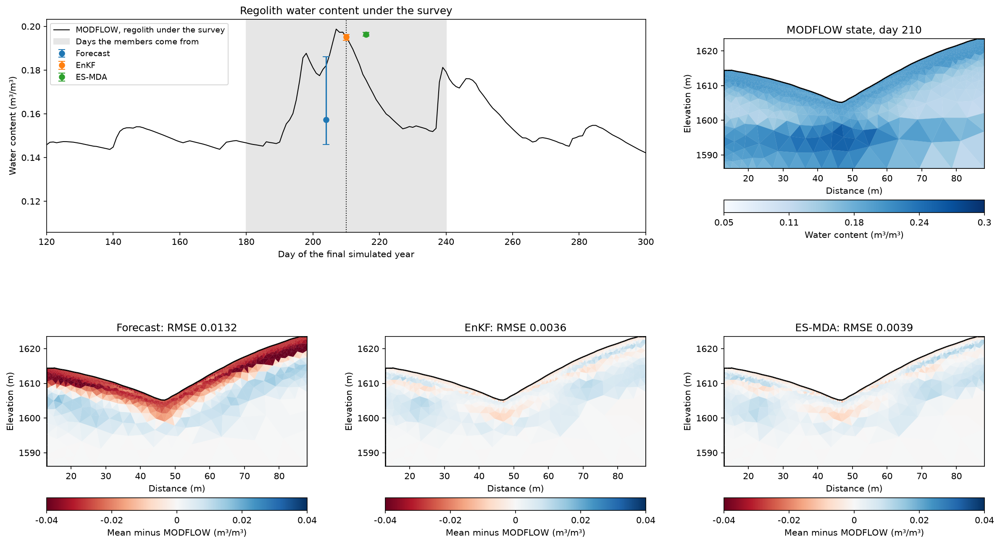

Note
Go to the end to download the full example code.
Ex. Assimilating an ERT Survey into a MODFLOW Water-Content Forecast#
Update the MODFLOW water content of a hillslope transect with one ERT survey,
using the ensemble Kalman filter (EnKF) and the ensemble smoother with multiple
data assimilation (ES-MDA). The states come from the Treeline catchment MODFLOW
model shipped under examples/data: TL_measurements holds the simulated
water content of the final model year on the survey mesh, one row per day, and
the Wenner survey that this water content predicts on day 210, in the wettest
week of that year, with 5% noise. Ex_Time_lapse_measurement wrote both.
The forecast ensemble comes from the same MODFLOW run. Its 54 members are the
simulated states of the days within a month of the survey, leaving out the week
around it, so their spread stands for uncertainty in the timing of the
wetting. With an ensemble of MODFLOW or ParFlow runs (perturbed forcing or
parameters), pass their states for the survey day as forecast instead. The
observation operator is the package’s Waxman-Smits petrophysics followed by its
ERT forward model, on a coarser mesh than the one that produced the survey.
Requires PyHydroGeophysX with pyGIMLi. Run time: about 2.5 minutes.
import os
import numpy as np
import matplotlib.pyplot as plt
import pygimli as pg
from pygimli.physics import ert
from scipy.spatial import cKDTree
try:
current_dir = os.path.dirname(os.path.abspath(__file__))
except NameError:
current_dir = os.getcwd()
if os.path.isdir(os.path.join(current_dir, "examples")):
current_dir = os.path.join(current_dir, "examples")
from PyHydroGeophysX.assimilation import ESMDA, EnsembleKalmanFilter, HydroGeophysObsOperator
from PyHydroGeophysX.forward.ert_forward import ERTForwardModeling
from PyHydroGeophysX.inversion.ert_mesh import build_inversion_mesh
from PyHydroGeophysX.petrophysics import water_content_to_resistivity
Load the MODFLOW states and the survey#
Each row of water_content_mesh.npy is one simulated day on the cells of
mesh.bms, whose markers separate regolith (0), fractured bedrock (3) and
fresh bedrock (2).
dataset = os.path.join(current_dir, "data", "TL_measurements")
model_mesh = pg.load(os.path.join(dataset, "mesh.bms"))
modflow_water_content = np.load(os.path.join(dataset, "water_content_mesh.npy"), mmap_mode="r")
modflow_porosity = np.load(os.path.join(dataset, "porosity_mesh.npy"))
model_units = np.array(model_mesh.cellMarkers())
survey_day = 210
survey = ert.load(os.path.join(dataset, "appres", f"synthetic_data{survey_day}.dat"))
observations = np.log(np.asarray(survey["rhoa"]))
print(f"MODFLOW: {modflow_water_content.shape[0]} days on {model_mesh.cellCount()} cells; "
f"survey: {survey.size()} readings on day {survey_day}")
Build the observation operator#
The state is the water content of each cell of an inversion mesh built for this survey. Each cell takes its unit and porosity from the nearest cell of the MODFLOW mesh. The Waxman-Smits parameters are those that produced the survey, and the operator returns log apparent resistivity.
mesh = build_inversion_mesh(survey, mesh_quality=34)
forward = ERTForwardModeling(mesh=mesh, data=survey)
cells = forward.fwd_operator.paraDomain
nearest = cKDTree(np.array(model_mesh.cellCenters())[:, :2]).query(
np.array(cells.cellCenters())[:, :2])[1]
unit, porosity = model_units[nearest], modflow_porosity[nearest]
area = np.array([cell.size() for cell in cells.cells()])
petrophysics = {0: (100., 2.2, .002), 3: (500., 1.8, 0.), 2: (2400., 2.5, 0.)} # rhos, n, sigma_sur
unit_names = {0: "Regolith", 3: "Fractured bedrock", 2: "Fresh bedrock"}
def to_resistivity(theta):
rho = np.empty_like(theta)
for marker, (rhos, n, sigma_sur) in petrophysics.items():
sel = unit == marker
rho[sel] = water_content_to_resistivity(theta[sel], rhos, n, porosity[sel], sigma_sur)
return rho
operator = HydroGeophysObsOperator(
petro_transform=to_resistivity,
forward_operator=lambda rho: np.log(forward.forward(rho, log_transform=False)))
truth = np.asarray(modflow_water_content[survey_day])[nearest]
print(f"State: water content in {cells.cellCount()} cells "
f"({', '.join(f'{np.sum(unit == m)} {unit_names[m].lower()}' for m in np.unique(unit))})")
Error budget and forecast ensemble#
The data error combines the survey’s 5% noise with about 3% for the coarser forward mesh, in log units. Only a synthetic test can check this budget: the survey-day MODFLOW state, passed through the operator, should misfit the survey by about that much. The forecast members are MODFLOW states of other days, so the survey-day state is not among them.
data_std = np.hypot(.05, .03)
misfit = observations - operator(truth)
print(f"Assumed data error {data_std:.3f}; misfit of the survey-day state {np.std(misfit):.3f}")
obs_cov = np.eye(observations.size) * data_std ** 2
member_days = [day for day in range(survey_day - 30, survey_day + 31)
if abs(day - survey_day) > 3]
forecast = np.asarray(modflow_water_content[member_days])[:, nearest].T # (cells, members)
print(f"Forecast ensemble: {forecast.shape[1]} members from days {member_days[0]}-{member_days[-1]}")
Assimilate the survey two ways#
ES-MDA starts from the same forecast, not from the EnKF result; otherwise the survey would be used twice. Its four updates inflate the data covariance by alpha=4, so that sum(1/alpha)=1. Both are Gaussian updates without bounds, so the result is checked against the physical range of water content.
enkf = EnsembleKalmanFilter(operator, obs_cov)
posterior_enkf = enkf.update(forecast, observations, rng=np.random.default_rng(10))
smoothed = ESMDA(operator, obs_cov, n_steps=4).update(
forecast, observations, rng=np.random.default_rng(11))
posterior_esmda = smoothed["ensemble"]
def weighted_rmse(values, sel):
return np.sqrt(np.sum(area[sel] * (values[sel] - truth[sel]) ** 2) / np.sum(area[sel]))
ensembles = {"Forecast": forecast, "EnKF": posterior_enkf, "ES-MDA": posterior_esmda}
present = [marker for marker in unit_names if np.any(unit == marker)]
print("RMSE against MODFLOW, by unit")
print(f"{'':10s}" + "".join(f"{unit_names[m]:>20s}" for m in present)
+ f"{'Spread':>10s}{'chi2':>8s}")
for name, members in ensembles.items():
mean = members.mean(axis=1)
chi2 = np.mean((observations - operator(mean)) ** 2) / data_std ** 2
spread = np.sqrt(np.sum(area * members.var(axis=1)) / area.sum())
print(f"{name:10s}" + "".join(f"{weighted_rmse(mean, unit == m):20.4f}" for m in present)
+ f"{spread:10.4f}{chi2:8.2f}")
# 2%: interpolated onto the mesh, the MODFLOW states exceed porosity by up to 1%.
if np.any(members < 0.) or np.any(members > 1.02 * porosity[:, None]):
raise ValueError(f"{name} left the physical range of water content; "
"update a bounded transform of it instead.")
Save the ensembles and compare them with the MODFLOW state#
The time series is the regolith water content under the survey, as MODFLOW simulated it; the markers show the median and the 5-95% range of the members’ regolith means on the survey day, offset for legibility. The maps show each ensemble mean minus the survey-day MODFLOW state.
output_dir = os.path.join(current_dir, "results", "ensemble_assimilation")
os.makedirs(output_dir, exist_ok=True)
np.savez_compressed(os.path.join(output_dir, "ensembles.npz"), member_days=member_days,
truth=truth, forecast=forecast, enkf=posterior_enkf, esmda=posterior_esmda,
history=smoothed["history"], observations=observations, unit=unit)
regolith = unit == 0
def regolith_mean(values):
return values[regolith].T @ area[regolith] / area[regolith].sum()
series = regolith_mean(np.asarray(modflow_water_content)[:, nearest].T)
fig = plt.figure(figsize=(16, 9))
grid = fig.add_gridspec(2, 3, left=.05, right=.98, top=.95, bottom=.05, wspace=.3, hspace=.4)
ax = fig.add_subplot(grid[0, :2])
ax.plot(series, "k", lw=1, label="MODFLOW, regolith under the survey")
ax.axvspan(member_days[0], member_days[-1], color="0.9", label="Days the members come from")
ax.axvline(survey_day, color="k", ls=":", lw=1)
for offset, (name, members), color in zip((-6., 0., 6.), ensembles.items(), ("C0", "C1", "C2")):
low, median, high = np.quantile(regolith_mean(members), [.05, .5, .95])
ax.errorbar(survey_day + offset, median, yerr=[[median - low], [high - median]], fmt="o",
color=color, capsize=4, label=name)
ax.legend(loc="upper left", fontsize=9)
ax.set(xlim=(120, 300), xlabel="Day of the final simulated year",
ylabel="Water content (m³/m³)", title="Regolith water content under the survey")
maps = [(grid[0, 2], truth, dict(cMap="Blues", cMin=.05, cMax=.3, label="Water content (m³/m³)"),
f"MODFLOW state, day {survey_day}")]
everywhere = np.ones(unit.size, dtype=bool)
for column, (name, members) in enumerate(ensembles.items()):
maps.append((grid[1, column], members.mean(axis=1) - truth,
dict(cMap="RdBu", cMin=-.04, cMax=.04, label="Mean minus MODFLOW (m³/m³)"),
f"{name}: RMSE {weighted_rmse(members.mean(axis=1), everywhere):.4f}"))
for position, values, style, title in maps:
ax = fig.add_subplot(position)
pg.show(cells, values, ax=ax, orientation="horizontal", **style)
ax.set(title=title, xlabel="Distance (m)", ylabel="Elevation (m)")
fig.savefig(os.path.join(output_dir, "ensemble_assimilation.png"), dpi=150, bbox_inches="tight")
plt.show()
The survey falls in the wettest week of the year (top left), so the members, drawn from the month around it, are drier than the survey-day state near the surface: the forecast underestimates the regolith water content by up to 0.04 (bottom left) and misfits the survey with a chi-squared of about 16. Both updates move the ensemble onto the survey-day state. They cut the regolith error from 0.033 to 0.005-0.006 and bring the misfit to about 1; ES-MDA’s four smaller steps, meant for a nonlinear operator, end close to the single EnKF step here. The error that remains, within about 0.01, lies along the base of the regolith and under the valley floor. The updated spread (0.002) is smaller than that error (0.004), so the updated ensemble is overconfident, as 54 members without localization or inflation tend to be. It also inherits the assumed petrophysics and the timing-based forecast.

